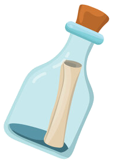

Avelina Axonov · Wake Forest University
AvelinaAxonov
Avelina, per sea
Marine ecologist·Engineer·Writer
Marine ecology, engineering, and everything in between — per sea.
Marine ecology, engineering, and everything in between — per sea.
I am an undergraduate at Wake Forest University completing a B.S. in Engineering (Mechanical and Electrical & Computer Engineering concentrations), a B.A. in Japanese Language & Culture, and a Biology minor, with graduation in December 2026. My research sits at the intersection of behavioral marine ecology and engineering instrumentation — I build the sensors, then take them into the field.
My work has included designing waterproof PCB housings for reef video transects in Belize and studying red blood cell electrophysiology in a BSL2 lab. Bilingual in Russian and English — I moved to the U.S. at fifteen — with advanced Japanese, I have studied, traveled, and dived across Japan, Belize, South Korea, Georgia, Hawaii, and Maine, with upcoming programs in Tbilisi and Antarctica. Outside the lab, I crochet, study linguistics, and play flute.
"Reef-search, per sea."


A selection of builds across instrumentation, mechatronics, and software. Each opens into its own page — some carry full assembly and testing notes, others adapt a capstone report or project site, with more added as they're documented.
Hydrodynamic boat-towed underwater camera housing for seafloor transect imaging. Named for the triggerfish genus.
Camera housing · Field-testedSenior capstone drone winch system, built by team Winchcraft. I led the team.
Capstone · Mechatronics
MATLAB app — automated laser-dot scaling tool for benthic transect photos from the Balistes housing.
MATLAB · Image analysisWaterproof PCB-based depth sensor and recorder. Named for the sea cucumber genus. Deployed in Belize.
Depth sensor · PCBHeat-resistant capsule with Arduino PCB, thermocouple sensors, and datalogger. Built for drone-deployed wildfire data collection.
Thermal · Drone payload
MATLAB app (GUI, uifigure) — photo annotation tool for counting species in reef survey images. Exports CSV.
MATLAB · GUI
Independent field study of crepuscular reef fish at Lighthouse Reef, Belize — dawn vs dusk communities. Latin for twilight.
Independent study · BelizeMATLAB app (GUI, uifigure) — a full Wordle with colored tiles, on-screen keyboard, and a word bank.
MATLAB · GUIMATLAB — a 15-question interactive trivia on Russian and Slavic folklore.
MATLAB
Two past field programs — a Caribbean reef and the Gulf of Maine — each paired instrument deployment with ecological survey.
Coral reef transects · SCUBA surveys · conch and sea cucumber population counts · camera housing deployment and field testing.
CTD profiler operations · chlorophyll and plankton sampling · salinity–density analysis in R · microscopy identification.
A preview of the underwater and field photography — much of it shot on the same reef where the housings are tested. Click any frame to open it, or step into the full gallery.
Joseph, Swimmer, Dickerson, Sherwin, Powers, Axonov, Pichataro, Johnson, Henslee. Experimental Handling Effects on Red Blood Cell Electrophysiological Properties. Electrophoresis. (submitted Nov 2024, under review)
Axonov, A. et al. Tow and Tell: [subtitle TBD]. Camera housing system paper. (Forthcoming, summer 2026)
Additional first-author and co-author submissions in preparation. (Forthcoming, summer 2026)
Swimmer, Joseph, Dickerson, Sherwin, Powers, Axonov et al. Dielectrophoresis Reveals Dynamic Changes in RBCs Due to Experimental Handling. BMES Annual Conference, Oct 2022, San Antonio, TX.
Axonov, A. "Surviving the Sea of Homogeneity: The Study of Ryukyuan Culture of Okinawa, Japan." URECA Day, WFU, September 2024.
Grading, lab redesign, pedagogy collaboration.
Hands-on engineering lectures, mentorship, site visits.
One-on-one instruction from elementary through advanced.
Peer advising for outgoing students.
Refugee assistance, visiting delegations, faith-based settings.
Programming and member coordination.
Designed and fabricated wrist-driven prosthetic hands.
Managed makerspace staff, equipment training, and outreach.
Open to research collaborations, fieldwork opportunities, and well-timed fish puns.

